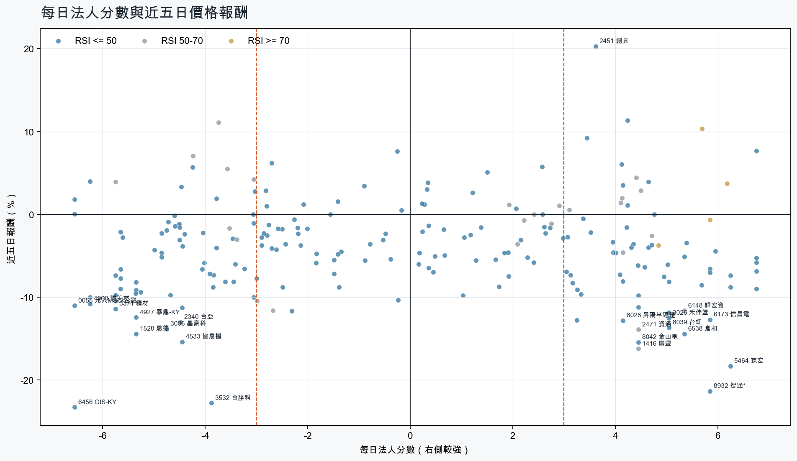
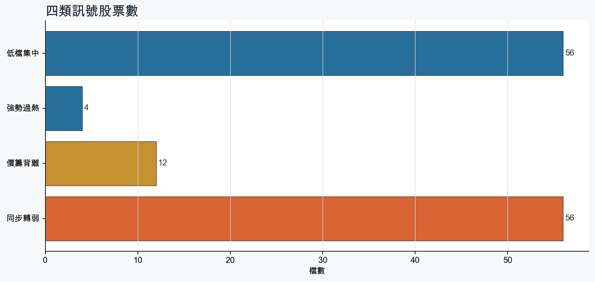
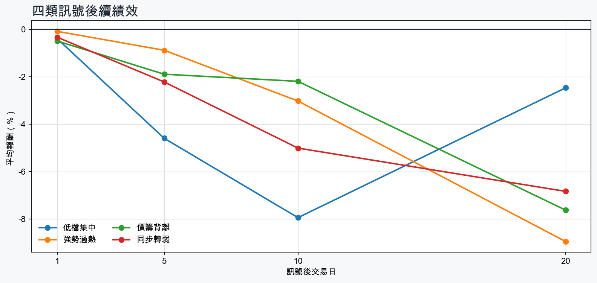

市場情緒偏空
近5日法人合計-11,299,905 張
篩選池上漲比例20.5%
籌碼好 / RSI低15 檔
籌碼差 / 價跌15 檔



EPS × PE VALUATION
法人常用的相對估值
顯示保守、基準與樂觀估值帶，不把單一數字包裝成精準目標價。
最新累計 EPS 依季數年化 × 同產業有效 P/E 的 Q25／中位數／Q75。排除本公司、非正 P/E，並以 1.5×IQR 排除離群值。估值帶是公開資料篩選值，不是法人目標價；未使用分析師預估 EPS。
MOOD × MONEY
情緒與籌碼雷達
熱度代表被討論程度；情緒分與法人方向分開計算。熱門不等於適合追價，樣本不足也不硬判多空。
| 股票 | 情緒 | 討論熱度 | 情緒 × 籌碼 | 情緒 × 基本面 |
|---|---|---|---|---|
| 0050 元大台灣50價籌背離 | 中性分歧 -11.3信心 100 | 10011 篇 / 1893 留言 / 3 則新聞 | 高熱分歧法人分 -6.5 | 基本面與情緒分歧基本面分 +0.0 |
| 2454 聯發科價籌背離 | 中性分歧 -2.8信心 100 | 742 篇 / 263 留言 / 3 則新聞 | 高熱分歧法人分 -3.6 | 基本面與情緒分歧基本面分 +2.4 |
| 2330 台積電價籌背離 | 情緒高漲 +36.5信心 100 | 733 篇 / 229 留言 / 3 則新聞 | 熱門但法人撤退法人分 -3.0 | 基本面與情緒共振基本面分 +3.6 |
| 3044 健鼎價籌背離 | 偏多 +32.0信心 67 | 491 篇 / 26 留言 / 3 則新聞 | 熱門但法人撤退法人分 -3.7 | 基本面與情緒共振基本面分 +3.6 |
| 6209 今國光同步轉弱 | 偏多 +29.7信心 30 | 300 篇 / 0 留言 / 3 則新聞 | 熱門但法人撤退法人分 -5.3 | 基本面與情緒共振基本面分 +3.6 |
| 4533 協易機同步轉弱 | 偏多 +29.7信心 30 | 300 篇 / 0 留言 / 3 則新聞 | 熱門但法人撤退法人分 -4.5 | 基本面與情緒共振基本面分 +1.2 |
| 2340 台亞同步轉弱 | 偏空 -29.7信心 30 | 300 篇 / 0 留言 / 3 則新聞 | 情籌雙弱法人分 -4.5 | 基本面與情緒分歧基本面分 -0.2 |
| 3374 精材同步轉弱 | 偏空 -29.7信心 30 | 300 篇 / 0 留言 / 3 則新聞 | 情籌雙弱法人分 -5.8 | 基本面佳、情緒悲觀基本面分 +3.6 |
| 1528 恩德同步轉弱 | 偏空 -29.7信心 30 | 300 篇 / 0 留言 / 3 則新聞 | 情籌雙弱法人分 -5.3 | 基本面與情緒分歧基本面分 -0.8 |
| 1301 台塑同步轉弱 | 中性分歧 +0.0信心 30 | 300 篇 / 0 留言 / 3 則新聞 | 情籌混合法人分 -4.7 | 基本面與情緒分歧基本面分 +1.2 |
| 0056 元大高股息價籌背離 | 中性分歧 +0.0信心 30 | 300 篇 / 0 留言 / 3 則新聞 | 情籌混合法人分 -6.5 | 基本面與情緒分歧基本面分 +0.0 |
| 1477 聚陽強勢過熱 | 中性分歧 +0.0信心 30 | 300 篇 / 0 留言 / 3 則新聞 | 情籌混合法人分 +5.8 | 基本面與情緒分歧基本面分 +3.0 |
01
籌碼好 / RSI低
優先研究基本面；法人續買且價格止穩時，才適合分批觀察。
| 股票 / 確認狀態 | 每日法人分 | 浦男式近似 | 法人加速度 | RSI / 相對強弱 | 量價確認 | 融資融券 | 每週集保確認 | 基本面 | EPS × 同業 P/E 估值 | 情緒 / 情籌 | 近期消息 | 論壇討論 |
|---|---|---|---|---|---|---|---|---|---|---|---|---|
| 6139 亞翔等待確認 · 100 分籌碼有訊號，但價格尚未確認 | +6.8法人 +2,489 張 / 5 天 | 接近 · 80站上月線；法人籌碼偏多；法人買盤加速；留意中期均線未翻多、量能異常 | +1,580 張近3日 +2,086 / 連續 +8 日 | 49.7相對大盤 +5.9% | 量比 0.12確認分 +3.120日線低於60日線；成交量不足 | -%融資 - 張 / 融券 - 張 | +0.71 pp1000張 +0.72 pp | 單月營收年增 +62.6%；累計營收年增 +53.4%；2026 Q3 累計 EPS 41.25仍需觀察下一期財報延續性來源：公開資訊觀測站 | 基準 NT$ 958.1估值帶 693.0–1,301現價 606.0 · 低於估值帶 · 距基準 +58.1%2026 Q3 累計 EPS 41.25 → 年化 55.00其他電子同業 P/E 12.60／17.42／23.65 · n=69 · 信心較高以 Q3 累計 EPS 年化，不等同分析師全年預估來源：TWSE／TPEx 每日本益比 | 偏多 +29.7熱度 30 / 信心 30情籌共振 | 【12:41 即時新聞】亞翔(6139)亮燈漲停，主力與法人買盤成盤中焦點CMoney投資網誌 · 11/24半導體股下跌，漢唐、亞翔的工程訂單有變嗎？口袋證券 · 11/23 | 近期沒有明確提及本股的論壇樣本 |
| 2451 創見可研究 · 95 分籌碼與價格確認，可列研究清單 | +3.6法人 +2,769 張 / 4 天 | 接近 · 90站上月線；法人籌碼偏多；法人買盤加速；留意中期均線未翻多 | +566 張近3日 +1,840 / 連續 -1 日 | 46.6相對大盤 +3.5% | 量比 1.20確認分 +3.520日線低於60日線 | -%融資 - 張 / 融券 - 張 | +1.73 pp1000張 +2.55 pp | 單月營收年增 +191.6%；累計營收年增 +344.5%；2026 Q3 累計 EPS 62.74仍需觀察下一期財報延續性來源：公開資訊觀測站 | 基準 NT$ 1,631估值帶 1,097–2,469現價 255.0 · 低於估值帶 · 距基準 +539.7%2026 Q3 累計 EPS 62.74 → 年化 83.65半導體同業 P/E 13.11／19.50／29.52 · n=157 · 信心較高以 Q3 累計 EPS 年化，不等同分析師全年預估來源：TWSE／TPEx 每日本益比 | 中性分歧 +0.0熱度 30 / 信心 30情籌混合 | 熱門股／記憶體反攻！群聯看好明年供應吃緊攜力積電、創見等7檔飆漲停| 產經非凡新聞台 · 11/23記憶體強勢回彈！DRAM雙雄領漲「群聯、宜鼎齊飆漲停」 力積電也帶量攻頂、廣穎、創見同亮紅燈Yahoo股市 · 11/23 | 近期沒有明確提及本股的論壇樣本 |
| 8299 群聯等待確認 · 77 分籌碼有訊號，但價格尚未確認 | +4.7法人 +2,047 張 / 3 天 | 未命中 · 55法人籌碼偏多；法人買盤加速；買超具延續性；留意未站月線、中期均線未翻多 | +1,310 張近3日 +1,842 / 連續 -1 日 | 45.1相對大盤 -3.5% | 量比 0.12確認分 -0.6收盤跌破20日線；20日線低於60日線；近20日弱於大盤；成交量不足 | -3.2%融資 -238 張 / 融券 +33 張 | +0.28 pp1000張 +1.89 pp | 單月營收年增 +346.3%；累計營收年增 +297.8%；2026 Q3 累計 EPS 325.49仍需觀察下一期財報延續性來源：公開資訊觀測站 | 基準 NT$ 8,463估值帶 5,690–12,811現價 1,595 · 低於估值帶 · 距基準 +430.6%2026 Q3 累計 EPS 325.5 → 年化 434.0半導體同業 P/E 13.11／19.50／29.52 · n=157 · 信心較高以 Q3 累計 EPS 年化，不等同分析師全年預估來源：TWSE／TPEx 每日本益比 | 偏多 +29.7熱度 30 / 信心 30情籌共振 | 融資下降但主力買超同時出現，群聯（8299）與宜鼎（5289... - 股市爆料同學會CMoney · 11/24IC設計全面反攻怎麼挑？信驊、群聯、矽力齊漲停法人喊買5檔：明年仍有2大逆風- 上市櫃旺得富理財網 · 11/24 | 近期沒有明確提及本股的論壇樣本 |
| 3030 德律等待確認 · 84 分籌碼有訊號，但價格尚未確認 | +3.5法人 +1,418 張 / 4 天 | 接近 · 75站上月線；法人籌碼偏多；法人買盤加速；留意中期均線未翻多、量能異常 | +1,151 張近3日 +1,333 / 連續 +4 日 | 49.3相對大盤 +2.3% | 量比 0.14確認分 +2.220日線低於60日線；成交量不足 | -%融資 - 張 / 融券 - 張 | -0.93 pp1000張 +0.38 pp | 單月營收年增 +71.9%；累計營收年增 +33.0%；2026 Q3 累計 EPS 10.89仍需觀察下一期財報延續性來源：公開資訊觀測站 | 基準 NT$ 252.9估值帶 182.8–343.4現價 231.5 · 估值帶內 · 距基準 +9.3%2026 Q3 累計 EPS 10.89 → 年化 14.52其他電子同業 P/E 12.59／17.42／23.65 · n=69 · 信心較高以 Q3 累計 EPS 年化，不等同分析師全年預估來源：TWSE／TPEx 每日本益比 | 中性分歧 +0.0熱度 30 / 信心 30情籌混合 | 【12:21 即時新聞】德律(3030)亮燈漲停，AI檢測設備題材受關注CMoney投資網誌 · 11/24【09:47 即時新聞】德律(3030)亮燈漲停，AI檢測設備與法人買盤成焦點CMoney投資網誌 · 11/23 | 近期沒有明確提及本股的論壇樣本 |
| 2478 大毅等待確認 · 74 分籌碼有訊號，但價格尚未確認 | +6.8法人 +2,398 張 / 5 天 | 未命中 · 51法人籌碼偏多；法人買盤加速；買超具延續性；留意未站月線、中期均線未翻多 | +595 張近3日 +1,523 / 連續 +6 日 | 36.4相對大盤 -13.6% | 量比 0.07確認分 -2.4收盤跌破20日線；20日線低於60日線；近20日弱於大盤；成交量不足 | -%融資 - 張 / 融券 - 張 | -2.07 pp1000張 +1.48 pp | 單月營收年增 +22.0%；累計營收年增 +23.4%；2026 Q3 累計 EPS 5.26仍需觀察下一期財報延續性來源：公開資訊觀測站 | 基準 NT$ 135.6估值帶 94.40–198.3現價 84.10 · 低於估值帶 · 距基準 +61.3%2026 Q3 累計 EPS 5.26 → 年化 7.01電子零組件同業 P/E 13.46／19.34／28.27 · n=144 · 信心較高以 Q3 累計 EPS 年化，不等同分析師全年預估來源：TWSE／TPEx 每日本益比 | 樣本不足 +0.0熱度 0 / 信心 0情緒樣本不足 | 近期沒有通過股票語境篩選的新聞 | 近期沒有明確提及本股的論壇樣本 |
| 9945 潤泰新等待確認 · 74 分籌碼有訊號，但價格尚未確認 | +3.5法人 +5,466 張 / 5 天 | 接近 · 71法人籌碼偏多；法人買盤加速；買超具延續性；留意未站月線、中期均線未翻多 | +1,424 張近3日 +3,325 / 連續 +5 日 | 43.3相對大盤 +4.2% | 量比 0.76確認分 -0.1收盤跌破20日線；20日線低於60日線 | -%融資 - 張 / 融券 - 張 | +0.23 pp1000張 +0.24 pp | 單月營收年增 +47.7%；累計營收年增 +30.9%；2026 Q3 累計 EPS 5.14仍需觀察下一期財報延續性來源：公開資訊觀測站 | 基準 NT$ 81.49估值帶 70.59–121.9現價 26.70 · 低於估值帶 · 距基準 +205.2%2026 Q3 累計 EPS 5.14 → 年化 6.85其他同業 P/E 10.30／11.89／17.79 · n=66 · 信心較高以 Q3 累計 EPS 年化，不等同分析師全年預估來源：TWSE／TPEx 每日本益比 | 樣本不足 +0.0熱度 0 / 信心 0情緒樣本不足 | 近期沒有通過股票語境篩選的新聞 | 近期沒有明確提及本股的論壇樣本 |
| 2481 強茂等待確認 · 69 分籌碼有訊號，但價格尚未確認 | +5.0法人 +4,971 張 / 4 天 | 未命中 · 45法人籌碼偏多；法人買盤加速；買超具延續性；留意未站月線、中期均線未翻多 | +3,854 張近3日 +4,273 / 連續 -1 日 | 33.8相對大盤 -22.4% | 量比 0.08確認分 -2.4收盤跌破20日線；20日線低於60日線；近20日弱於大盤；成交量不足 | -%融資 - 張 / 融券 - 張 | +0.41 pp1000張 +1.06 pp | 單月營收年增 +33.2%；累計營收年增 +21.6%；2026 Q3 累計 EPS 3.73仍需觀察下一期財報延續性來源：公開資訊觀測站 | 基準 NT$ 96.78估值帶 63.96–146.8現價 96.90 · 估值帶內 · 距基準 -0.1%2026 Q3 累計 EPS 3.73 → 年化 4.97半導體同業 P/E 12.86／19.46／29.52 · n=157 · 信心較高以 Q3 累計 EPS 年化，不等同分析師全年預估來源：TWSE／TPEx 每日本益比 | 樣本不足 +0.0熱度 18 / 信心 10情緒樣本不足 | 【11:54 即時新聞】強茂(2481)亮燈漲停，AI功率半導體轉單成盤中焦點CMoney投資網誌 · 11/24 | 近期沒有明確提及本股的論壇樣本 |
| 1727 中華化等待確認 · 70 分籌碼有訊號，但價格尚未確認 | +6.8法人 +1,488 張 / 5 天 | 未命中 · 45法人籌碼偏多；法人買盤加速；買超具延續性；留意未站月線、中期均線未翻多 | +167 張近3日 +875 / 連續 +6 日 | 30.0相對大盤 -15.4% | 量比 0.11確認分 -2.7收盤跌破20日線；20日線低於60日線；近20日弱於大盤；成交量不足 | -%融資 - 張 / 融券 - 張 | -1.46 pp1000張 +0.00 pp | 單月營收年增 +70.0%；累計營收年增 +31.9%；2026 Q3 累計 EPS 0.99仍需觀察下一期財報延續性來源：公開資訊觀測站 | 基準 NT$ 20.10估值帶 14.60–26.52現價 65.50 · 高於估值帶 · 距基準 -69.3%2026 Q3 累計 EPS 0.99 → 年化 1.32化學工業同業 P/E 11.06／15.23／20.09 · n=33 · 信心較高以 Q3 累計 EPS 年化，不等同分析師全年預估來源：TWSE／TPEx 每日本益比 | 偏多 +29.7熱度 30 / 信心 30情籌共振 | 中華化公告本公司決議暫停115年度現金增資相關作業暨申請延長現金增資募集期間等相關事宜Yahoo股市 · 11/23《中華化專訪2》攜台塑擴產，電子級硫酸廠2029量產Yahoo股市 · 11/18 | 近期沒有明確提及本股的論壇樣本 |
| 6191 精成科等待確認 · 72 分籌碼有訊號，但價格尚未確認 | +4.2法人 +3,165 張 / 4 天 | 接近 · 60法人籌碼偏多；法人買盤加速；買超具延續性；留意未站月線、中期均線未翻多 | +2,220 張近3日 +2,320 / 連續 -1 日 | 46.3相對大盤 -3.2% | 量比 0.70確認分 -0.6收盤跌破20日線；20日線低於60日線；近20日弱於大盤 | -%融資 - 張 / 融券 - 張 | -0.01 pp1000張 -0.19 pp | 單月營收年增 +79.2%；累計營收年增 +33.8%；2026 Q3 累計 EPS 4.16仍需觀察下一期財報延續性來源：公開資訊觀測站 | 基準 NT$ 107.3估值帶 75.49–156.8現價 73.50 · 低於估值帶 · 距基準 +46.0%2026 Q3 累計 EPS 4.16 → 年化 5.55電子零組件同業 P/E 13.61／19.34／28.27 · n=144 · 信心較高以 Q3 累計 EPS 年化，不等同分析師全年預估來源：TWSE／TPEx 每日本益比 | 偏多 +29.7熱度 30 / 信心 30情籌共振 | 盤中速報 - 精成科(6191)股價拉至漲停，漲停價73.5元，成交304張TradingView · 11/24精成科調整配息策略資本支出年增5成押注AI擴產- 新聞MoneyDJ · 04/29 | 近期沒有明確提及本股的論壇樣本 |
| 2365 昆盈等待確認 · 68 分籌碼有訊號，但價格尚未確認 | +5.4法人 +1,740 張 / 5 天 | 未命中 · 46法人籌碼偏多；法人買盤加速；買超具延續性；留意未站月線、中期均線未翻多 | +418 張近3日 +1,189 / 連續 +10 日 | 36.1相對大盤 -9.7% | 量比 0.26確認分 -2.4收盤跌破20日線；20日線低於60日線；近20日弱於大盤；成交量不足；流動性偏低 | -%融資 - 張 / 融券 - 張 | -0.07 pp1000張 +0.27 pp | 單月營收年增 +39.6%；累計營收年增 +15.9%；2026 Q3 累計 EPS 0.412026 Q3 累計營益率 3.8%來源：公開資訊觀測站 | 基準 NT$ 7.22估值帶 5.52–9.49現價 21.05 · 高於估值帶 · 距基準 -65.7%2026 Q3 累計 EPS 0.41 → 年化 0.55電腦及週邊同業 P/E 10.10／13.21／17.36 · n=83 · 信心較高以 Q3 累計 EPS 年化，不等同分析師全年預估來源：TWSE／TPEx 每日本益比 | 樣本不足 +9.9熱度 18 / 信心 10情緒樣本不足 | 《外資買超31-21》昆盈(221)、寶一(220)、愛之味(219)富聯網 · 11/24 | 近期沒有明確提及本股的論壇樣本 |
| 8096 擎亞等待確認 · 67 分籌碼有訊號，但價格尚未確認 | +6.2法人 +2,124 張 / 5 天 | 未命中 · 51法人籌碼偏多；法人買盤加速；買超具延續性；留意未站月線、中期均線未翻多 | +119 張近3日 +1,222 / 連續 +8 日 | 36.7相對大盤 -14.2% | 量比 0.14確認分 -2.8收盤跌破20日線；20日線低於60日線；近20日弱於大盤；成交量不足 | -5.9%融資 -520 張 / 融券 +4 張 | -0.47 pp1000張 -2.50 pp | 單月營收年增 +370.3%；累計營收年增 +122.7%；2026 Q3 累計 EPS 8.512026 Q3 累計營益率 2.7%來源：公開資訊觀測站 | 基準 NT$ 100.1估值帶 77.16–135.2現價 60.10 · 低於估值帶 · 距基準 +66.5%2026 Q3 累計 EPS 8.51 → 年化 11.35電子通路同業 P/E 6.80／8.82／11.92 · n=27 · 信心較高以 Q3 累計 EPS 年化，不等同分析師全年預估來源：TWSE／TPEx 每日本益比 | 偏多 +29.7熱度 30 / 信心 30情籌共振 | 【12:00 即時新聞】擎亞(8096)股價走強，記憶體與AI伺服器訂單成盤中焦點CMoney投資網誌 · 09/29擎亞 (8096) 做什麼的？三星在台重要合作夥伴！營運亮點與財報觀察全解析口袋證券 · 02/02 | 近期沒有明確提及本股的論壇樣本 |
| 8110 華東等待確認 · 66 分籌碼有訊號，但價格尚未確認 | +5.0法人 +2,933 張 / 5 天 | 未命中 · 51法人籌碼偏多；法人買盤加速；買超具延續性；留意未站月線、中期均線未翻多 | +1,665 張近3日 +2,297 / 連續 +5 日 | 35.7相對大盤 -17.3% | 量比 0.22確認分 -2.4收盤跌破20日線；20日線低於60日線；近20日弱於大盤；成交量不足 | -%融資 - 張 / 融券 - 張 | -0.21 pp1000張 -0.13 pp | 單月營收年增 +33.1%；累計營收年增 +17.8%；2026 Q3 累計 EPS 2.602026 Q3 累計營益率 4.2%來源：公開資訊觀測站 | 基準 NT$ 67.60估值帶 45.45–102.3現價 31.70 · 低於估值帶 · 距基準 +113.2%2026 Q3 累計 EPS 2.60 → 年化 3.47半導體同業 P/E 13.11／19.50／29.52 · n=157 · 信心較高以 Q3 累計 EPS 年化，不等同分析師全年預估來源：TWSE／TPEx 每日本益比 | 偏多 +19.8熱度 26 / 信心 20情籌混合 | 華東(8110)做什麼？記憶體封測業務、營收獲利與同業比較一次看懂口袋證券 · 06/24華東今年營收估雙位數成長獲利看顯增- 新聞MoneyDJ · 09/21 | 近期沒有明確提及本股的論壇樣本 |
| 4541 晟田等待確認 · 70 分籌碼有訊號，但價格尚未確認 | +4.5法人 +1,412 張 / 3 天 | 未命中 · 55法人籌碼偏多；法人買盤加速；買超具延續性；留意未站月線、中期均線未翻多 | +1,393 張近3日 +1,472 / 連續 +2 日 | 32.7相對大盤 -12.9% | 量比 1.73確認分 -1.0收盤跌破20日線；20日線低於60日線；近20日弱於大盤 | +1.2%融資 +37 張 / 融券 -1 張 | -0.94 pp1000張 -3.10 pp | 單月營收年增 +21.0%；累計營收年增 +31.2%；2026 Q3 累計 EPS 3.06仍需觀察下一期財報延續性來源：公開資訊觀測站 | 基準 NT$ 48.51估值帶 41.53–72.58現價 43.50 · 估值帶內 · 距基準 +11.5%2026 Q3 累計 EPS 3.06 → 年化 4.08其他同業 P/E 10.18／11.89／17.79 · n=66 · 信心較高以 Q3 累計 EPS 年化，不等同分析師全年預估來源：TWSE／TPEx 每日本益比 | 樣本不足 +0.0熱度 0 / 信心 0情緒樣本不足 | 近期沒有通過股票語境篩選的新聞 | 近期沒有明確提及本股的論壇樣本 |
| 6173 信昌電等待確認 · 70 分籌碼有訊號，但價格尚未確認 | +5.8法人 +3,555 張 / 4 天 | 未命中 · 45法人籌碼偏多；法人買盤加速；買超具延續性；留意未站月線、中期均線未翻多 | +483 張近3日 +1,153 / 連續 +2 日 | 26.8相對大盤 -32.5% | 量比 0.03確認分 -1.8收盤跌破20日線；20日線低於60日線；近20日弱於大盤；成交量不足 | -5.8%融資 -226 張 / 融券 +257 張 | -1.82 pp1000張 -1.99 pp | 單月營收年增 +71.5%；累計營收年增 +33.2%；2026 Q3 累計 EPS 5.44仍需觀察下一期財報延續性來源：公開資訊觀測站 | 基準 NT$ 139.5估值帶 97.63–205.1現價 151.0 · 估值帶內 · 距基準 -7.6%2026 Q3 累計 EPS 5.44 → 年化 7.25電子零組件同業 P/E 13.46／19.23／28.27 · n=144 · 信心較高以 Q3 累計 EPS 年化，不等同分析師全年預估來源：TWSE／TPEx 每日本益比 | 偏空 -29.7熱度 30 / 信心 30法人布局、市場悲觀 | 盤中速報 - 信昌電(6173)股價拉至漲停，漲停價151.0元，成交200張TradingView · 11/24《電零組》注意股：信昌電 近5日跌28.39%富聯網 · 11/24 | 近期沒有明確提及本股的論壇樣本 |
| 2369 菱生等待確認 · 65 分籌碼有訊號，但價格尚未確認 | +4.3法人 +1,520 張 / 5 天 | 未命中 · 51法人籌碼偏多；法人買盤加速；買超具延續性；留意未站月線、中期均線未翻多 | +1,078 張近3日 +1,343 / 連續 +6 日 | 40.0相對大盤 -6.9% | 量比 0.25確認分 -2.1收盤跌破20日線；20日線低於60日線；近20日弱於大盤；成交量不足 | -%融資 - 張 / 融券 - 張 | -0.48 pp1000張 +0.33 pp | 單月營收年增 +18.7%；累計營收年增 +33.1%；2026 Q3 累計 EPS 0.442026 Q3 累計營益率 3.3%來源：公開資訊觀測站 | 基準 NT$ 10.64估值帶 7.50–16.59現價 22.75 · 高於估值帶 · 距基準 -53.2%2026 Q3 累計 EPS 0.44 → 年化 0.59半導體同業 P/E 12.79／18.13／28.27 · n=155 · 信心較高以 Q3 累計 EPS 年化，不等同分析師全年預估來源：TWSE／TPEx 每日本益比 | 樣本不足 +0.0熱度 0 / 信心 0情緒樣本不足 | 近期沒有通過股票語境篩選的新聞 | 近期沒有明確提及本股的論壇樣本 |
02
籌碼好 / RSI高
趨勢強但不追價，等待量縮、RSI降溫或回測支撐。
| 股票 / 確認狀態 | 每日法人分 | 浦男式近似 | 法人加速度 | RSI / 相對強弱 | 量價確認 | 融資融券 | 每週集保確認 | 基本面 | EPS × 同業 P/E 估值 | 情緒 / 情籌 | 近期消息 | 論壇討論 |
|---|---|---|---|---|---|---|---|---|---|---|---|---|
| 1477 聚陽等待拉回 · 100 分等拉回，不追價 | +5.8法人 +3,422 張 / 4 天 | 命中 · 96站上月線；中期均線偏多；法人籌碼偏多；留意動能位置非最佳 | +1,319 張近3日 +2,281 / 連續 +4 日 | 73.6相對大盤 +21.7% | 量比 1.39確認分 +6.5價格、量能與籌碼未見明顯弱項 | -%融資 - 張 / 融券 - 張 | +1.97 pp1000張 +0.89 pp | 單月營收年增 +15.1%；累計營收年增 +1.3%；2026 Q3 累計 EPS 11.62仍需觀察下一期財報延續性來源：公開資訊觀測站 | 基準 NT$ 201.1估值帶 135.9–319.0現價 225.0 · 估值帶內 · 距基準 -10.6%2026 Q3 累計 EPS 11.62 → 年化 15.49紡織纖維同業 P/E 8.77／12.98／20.59 · n=30 · 信心較高以 Q3 累計 EPS 年化，不等同分析師全年預估來源：TWSE／TPEx 每日本益比 | 中性分歧 +0.0熱度 30 / 信心 30情籌混合 | 年化配息率飆22%！00930「重倉聚陽、神基、鴻海」雙月配0.75元 4檔ETF今最後買進日Yahoo股市 · 11/23【1120台股盤前】加權摜破年線、櫃買破底，限空令2.0上路，巴菲特護城河策略鎖定【聯強】、【聚陽】、【裕融】永豐金證券 · 11/22 | 近期沒有明確提及本股的論壇樣本 |
| 2597 潤弘等待拉回 · 100 分等拉回，不追價 | +5.7法人 +2,287 張 / 5 天 | 接近 · 86站上月線；中期均線偏多；法人籌碼偏多；留意量能異常、動能位置非最佳 | +845 張近3日 +1,741 / 連續 +10 日 | 75.2相對大盤 +21.4% | 量比 3.84確認分 +5.3價格、量能與籌碼未見明顯弱項 | -%融資 - 張 / 融券 - 張 | +0.63 pp1000張 +0.14 pp | 單月營收年增 +30.5%；累計營收年增 +15.7%；2026 Q3 累計 EPS 8.32仍需觀察下一期財報延續性來源：公開資訊觀測站 | 基準 NT$ 93.07估值帶 68.11–146.4現價 192.0 · 高於估值帶 · 距基準 -51.5%2026 Q3 累計 EPS 8.32 → 年化 11.09建材營造同業 P/E 6.14／8.39／13.20 · n=65 · 信心較高以 Q3 累計 EPS 年化，不等同分析師全年預估來源：TWSE／TPEx 每日本益比 | 樣本不足 +0.0熱度 18 / 信心 10情緒樣本不足 | 【09:15 即時新聞】潤弘(2597)盤中小漲，AI建廠與預鑄工法續受關注CMoney投資網誌 · 11/20 | 近期沒有明確提及本股的論壇樣本 |
| 1476 儒鴻等待拉回 · 100 分等拉回，不追價 | +4.8法人 +1,979 張 / 5 天 | 命中 · 96站上月線；中期均線偏多；法人籌碼偏多；留意動能位置非最佳 | +267 張近3日 +1,232 / 連續 +10 日 | 72.5相對大盤 +27.7% | 量比 1.11確認分 +5.7價格、量能與籌碼未見明顯弱項 | -%融資 - 張 / 融券 - 張 | +2.26 pp1000張 +0.42 pp | 單月營收年增 +10.7%；累計營收年增 +5.9%；2026 Q3 累計 EPS 18.70仍需觀察下一期財報延續性來源：公開資訊觀測站 | 基準 NT$ 323.6估值帶 218.7–513.4現價 370.5 · 估值帶內 · 距基準 -12.7%2026 Q3 累計 EPS 18.70 → 年化 24.93紡織纖維同業 P/E 8.77／12.98／20.59 · n=30 · 信心較高以 Q3 累計 EPS 年化，不等同分析師全年預估來源：TWSE／TPEx 每日本益比 | 偏多 +29.7熱度 30 / 信心 30情籌共振 | 儒鴻訂單動能強勁- 日報工商時報 · 11/23【10:19 即時新聞】儒鴻(1476)盤中小跌守高檔，法人與主力買盤延續CMoney投資網誌 · 11/20 | 近期沒有明確提及本股的論壇樣本 |
| 3023 信邦等待拉回 · 100 分等拉回，不追價 | +6.2法人 +2,057 張 / 5 天 | 接近 · 81站上月線；法人籌碼偏多；法人買盤加速；留意中期均線未翻多、量能尚未確認 | +392 張近3日 +1,388 / 連續 +7 日 | 72.3相對大盤 +11.4% | 量比 2.56確認分 +4.220日線低於60日線 | -%融資 - 張 / 融券 - 張 | -0.80 pp1000張 -0.77 pp | 單月營收年增 +32.0%；累計營收年增 +16.9%；2026 Q3 累計 EPS 11.16仍需觀察下一期財報延續性來源：公開資訊觀測站 | 基準 NT$ 286.1估值帶 200.3–420.7現價 278.0 · 估值帶內 · 距基準 +2.9%2026 Q3 累計 EPS 11.16 → 年化 14.88電子零組件同業 P/E 13.46／19.23／28.27 · n=144 · 信心較高以 Q3 累計 EPS 年化，不等同分析師全年預估來源：TWSE／TPEx 每日本益比 | 樣本不足 +0.0熱度 18 / 信心 10情緒樣本不足 | 【11:02 即時新聞】信邦(3023)盤中震盪偏弱，法人與主力買盤為焦點CMoney投資網誌 · 11/20 | 近期沒有明確提及本股的論壇樣本 |
03
籌碼差 / 股價上漲
可能是事件行情或軋空；沒有籌碼改善前避免追高。
| 股票 / 確認狀態 | 每日法人分 | 浦男式近似 | 法人加速度 | RSI / 相對強弱 | 量價確認 | 融資融券 | 每週集保確認 | 基本面 | EPS × 同業 P/E 估值 | 情緒 / 情籌 | 近期消息 | 論壇討論 |
|---|---|---|---|---|---|---|---|---|---|---|---|---|
| 3044 健鼎風險警示 · 58 分背離警戒，避免追高 | -3.7法人 -2,744 張 / 1 天 | 接近 · 62站上月線；法人買盤加速；明顯強於大盤；留意中期均線未翻多、法人籌碼偏弱 | +780 張近3日 -1,125 / 連續 -2 日 | 50.3相對大盤 +6.2% | 量比 0.29確認分 +3.020日線低於60日線；成交量不足 | -%融資 - 張 / 融券 - 張 | -0.15 pp1000張 -0.92 pp | 單月營收年增 +70.3%；累計營收年增 +43.7%；2026 Q3 累計 EPS 24.95仍需觀察下一期財報延續性來源：公開資訊觀測站 | 基準 NT$ 643.4估值帶 447.8–940.5現價 486.5 · 估值帶內 · 距基準 +32.2%2026 Q3 累計 EPS 24.95 → 年化 33.27電子零組件同業 P/E 13.46／19.34／28.27 · n=144 · 信心較高以 Q3 累計 EPS 年化，不等同分析師全年預估來源：TWSE／TPEx 每日本益比 | 偏多 +32.0熱度 49 / 信心 67熱門但法人撤退 | 【即時新聞】健鼎受惠AI伺服器需求大增，昨日盤中強勢亮燈衝上漲停板！CMoney投資網誌 · 11/24健鼎(3044)第三季毛利率衝上34.84%創新高！伺服器與記憶體雙主軸，車用比重兩年腰斬，千億營收撐得住嗎？優分析 UAnalyze · 11/24 | [標的] 健鼎適合ALL IN嗎?PTT Stock · 11-23 · 26 留言 |
| 5243 乙盛-KY風險警示 · 27 分背離警戒，避免追高 | -6.2法人 -2,003 張 / 0 天 | 未命中 · 43法人買盤加速；量價健康；基本面有支撐；留意未站月線、中期均線未翻多 | +1,255 張近3日 -457 / 連續 -9 日 | 43.7相對大盤 -5.3% | 量比 1.00確認分 -0.3收盤跌破20日線；20日線低於60日線；近20日弱於大盤 | -%融資 - 張 / 融券 - 張 | -3.82 pp1000張 -1.50 pp | 單月營收年增 +64.7%；累計營收年增 +19.0%；2026 Q3 累計 EPS 4.72仍需觀察下一期財報延續性來源：公開資訊觀測站 | 基準 NT$ 121.0估值帶 69.67–169.8現價 75.70 · 估值帶內 · 距基準 +59.9%2026 Q3 累計 EPS 4.72 → 年化 6.29光電同業 P/E 11.07／19.23／26.98 · n=70 · 信心較高以 Q3 累計 EPS 年化，不等同分析師全年預估來源：TWSE／TPEx 每日本益比 | 中性分歧 +0.0熱度 26 / 信心 20情籌混合 | 5243 乙盛-KY - 下跌21天轉折❤️國安護盤V型反轉- 股市爆料同學會CMoney · 11/24乙盛-KY(5243)配息、現金股利發放日總覽口袋證券 · 11/20 | 近期沒有明確提及本股的論壇樣本 |
| 6285 啟碁風險警示 · 13 分背離警戒，避免追高 | -4.2法人 -4,227 張 / 2 天 | 未命中 · 34基本面有支撐；動能強但未過熱；流動性足夠；留意未站月線、中期均線未翻多 | -2,731 張近3日 -3,718 / 連續 +1 日 | 48.1相對大盤 -1.7% | 量比 0.19確認分 -4.8收盤跌破20日線；20日線低於60日線；成交量不足；法人買盤減速 | -%融資 - 張 / 融券 - 張 | -1.55 pp1000張 -1.63 pp | 單月營收年增 +77.8%；累計營收年增 +44.7%；2026 Q3 累計 EPS 10.102026 Q3 累計營益率 5.1%來源：公開資訊觀測站 | 基準 NT$ 260.0估值帶 171.4–551.5現價 194.5 · 估值帶內 · 距基準 +33.7%2026 Q3 累計 EPS 10.10 → 年化 13.47通信網路同業 P/E 12.73／19.31／40.95 · n=61 · 信心中等以 Q3 累計 EPS 年化，不等同分析師全年預估來源：TWSE／TPEx 每日本益比 | 樣本不足 +0.0熱度 0 / 信心 0情緒樣本不足 | 近期沒有通過股票語境篩選的新聞 | 近期沒有明確提及本股的論壇樣本 |
| 5469 瀚宇博風險警示 · 31 分背離警戒，避免追高 | -5.8法人 -6,366 張 / 0 天 | 接近 · 60站上月線；明顯強於大盤；基本面有支撐；留意中期均線未翻多、法人籌碼偏弱 | -2,257 張近3日 -4,756 / 連續 -7 日 | 55.5相對大盤 +5.1% | 量比 2.57確認分 -0.520日線低於60日線；法人買盤減速 | -%融資 - 張 / 融券 - 張 | -0.72 pp1000張 -0.13 pp | 單月營收年增 +65.2%；累計營收年增 +30.4%；2026 Q3 累計 EPS 4.07仍需觀察下一期財報延續性來源：公開資訊觀測站 | 基準 NT$ 105.0估值帶 73.04–153.4現價 71.20 · 低於估值帶 · 距基準 +47.4%2026 Q3 累計 EPS 4.07 → 年化 5.43電子零組件同業 P/E 13.46／19.34／28.27 · n=144 · 信心較高以 Q3 累計 EPS 年化，不等同分析師全年預估來源：TWSE／TPEx 每日本益比 | 樣本不足 +0.0熱度 0 / 信心 0情緒樣本不足 | 近期沒有通過股票語境篩選的新聞 | 近期沒有明確提及本股的論壇樣本 |
| 2454 聯發科風險警示 · 55 分背離警戒，避免追高 | -3.6法人 -4,095 張 / 0 天 | 接近 · 62站上月線；法人買盤加速；明顯強於大盤；留意中期均線未翻多、法人籌碼偏弱 | +1,909 張近3日 -1,676 / 連續 -7 日 | 55.4相對大盤 +15.2% | 量比 0.10確認分 +3.120日線低於60日線；成交量不足 | -%融資 - 張 / 融券 - 張 | -1.15 pp1000張 -1.21 pp | 單月營收年增 +5.8%；累計營收年增 +5.3%；2026 Q3 累計 EPS 47.94仍需觀察下一期財報延續性來源：公開資訊觀測站 | 基準 NT$ 1,202估值帶 819.5–1,832現價 4,050 · 高於估值帶 · 距基準 -70.3%2026 Q3 累計 EPS 47.94 → 年化 63.92半導體同業 P/E 12.82／18.80／28.66 · n=156 · 信心較高以 Q3 累計 EPS 年化，不等同分析師全年預估來源：TWSE／TPEx 每日本益比 | 中性分歧 -2.8熱度 74 / 信心 100高熱分歧 | 黃仁勳回歸！鴻海、台積電、聯發科等556檔都漲停 金控總座曝供應鏈鬆口氣Yahoo股市 · 11/2400891漲停！黃仁勳回歸點燃半導體行情 台積電、聯發科、日月光齊亮燈UDN · 11/24 | [情報] 2545 皇翔 買賣聯發科 賠184,604仟元PTT Stock · 11-23 · 147 留言[新聞] 大摩：聯發科可望贏得新 TPU 專案 重申目PTT Stock · 11-22 · 116 留言 |
| 0050 元大台灣50風險警示 · 4 分背離警戒，避免追高 | -6.5法人 -919,646 張 / 0 天 | 未命中 · 32相對大盤偏強；動能強但未過熱；流動性足夠；留意未站月線、中期均線未翻多 | -33,671 張近3日 -568,854 / 連續 -7 日 | 46.0相對大盤 +2.7% | 量比 0.18確認分 -3.3收盤跌破20日線；20日線低於60日線；成交量不足；法人買盤減速 | -%融資 - 張 / 融券 - 張 | -1.57 pp1000張 -1.57 pp | 尚無明確成長訊號仍需觀察下一期財報延續性來源：公開資訊觀測站 | 不適用最新財報缺少可年化 EPS | 中性分歧 -11.3熱度 100 / 信心 100高熱分歧 | 【零股排行榜】 盤中零股成交量TOP 20｜00406A 主動中信台灣收益、00981A 主動統一台股增長、00919 群益台灣精選高息、0050 元大台灣50、0056 元大高股息(1124)｜豐雲學堂2026 年 11 月永豐金證券 · 11/240050 元大台灣50 - 台股震盪反成買點！0050全年淨申購破兆再創ETF新里程碑- 股市爆料同學會CMoney · 11/24 | [新聞] 2.3億買0050「虧損3000萬」哲哲堅持不賣PTT Stock · 11-23 · 397 留言[情報] 1124 違約交割 元大台灣50反1PTT Stock · 11-24 · 320 留言 |
| 2347 聯強風險警示 · 18 分背離警戒，避免追高 | -4.5法人 -8,019 張 / 0 天 | 未命中 · 30量價健康；基本面有支撐；流動性足夠；留意未站月線、中期均線未翻多 | -1,183 張近3日 -5,140 / 連續 -10 日 | 24.2相對大盤 -13.6% | 量比 1.41確認分 -3.9收盤跌破20日線；20日線低於60日線；近20日弱於大盤；法人買盤減速 | -%融資 - 張 / 融券 - 張 | -0.64 pp1000張 -0.76 pp | 單月營收年增 +59.5%；累計營收年增 +93.5%；2026 Q3 累計 EPS 7.042026 Q3 累計營益率 2.5%來源：公開資訊觀測站 | 基準 NT$ 82.79估值帶 63.83–111.9現價 74.90 · 估值帶內 · 距基準 +10.5%2026 Q3 累計 EPS 7.04 → 年化 9.39電子通路同業 P/E 6.80／8.82／11.92 · n=27 · 信心較高以 Q3 累計 EPS 年化，不等同分析師全年預估來源：TWSE／TPEx 每日本益比 | 樣本不足 +0.0熱度 0 / 信心 0情緒樣本不足 | 近期沒有通過股票語境篩選的新聞 | 近期沒有明確提及本股的論壇樣本 |
| 3715 定穎投控風險警示 · 69 分背離警戒，避免追高 | -4.2法人 -2,474 張 / 2 天 | 接近 · 58站上月線；法人買盤加速；明顯強於大盤；留意中期均線未翻多、法人籌碼偏弱 | +2,502 張近3日 +303 / 連續 +1 日 | 57.7相對大盤 +21.7% | 量比 0.07確認分 +5.220日線低於60日線；成交量不足 | -%融資 - 張 / 融券 - 張 | +4.62 pp1000張 +3.86 pp | 單月營收年增 +121.5%；累計營收年增 +58.9%2026 Q3 累計 EPS -1.44；2026 Q3 累計營益率 5.0%來源：公開資訊觀測站 | 不適用年化 EPS 非正數，不適合使用本益比估值 | 樣本不足 +0.0熱度 0 / 信心 0情緒樣本不足 | 近期沒有通過股票語境篩選的新聞 | 近期沒有明確提及本股的論壇樣本 |
| 0056 元大高股息風險警示 · 25 分背離警戒，避免追高 | -6.5法人 -259,082 張 / 0 天 | 未命中 · 45法人買盤加速；相對大盤偏強；量價健康；留意未站月線、中期均線未翻多 | +12,497 張近3日 -141,281 / 連續 -10 日 | 43.0相對大盤 +1.3% | 量比 0.93確認分 +0.3收盤跌破20日線；20日線低於60日線 | -%融資 - 張 / 融券 - 張 | -0.18 pp1000張 -0.18 pp | 尚無明確成長訊號仍需觀察下一期財報延續性來源：公開資訊觀測站 | 不適用最新財報缺少可年化 EPS | 中性分歧 +0.0熱度 30 / 信心 30情籌混合 | 【零股排行榜】 盤中零股成交量TOP 20｜00406A 主動中信台灣收益、00981A 主動統一台股增長、00919 群益台灣精選高息、0050 元大台灣50、0056 元大高股息(1124)｜豐雲學堂2026 年 11 月永豐金證券 · 11/240056 元大高股息- 這個最慘：輝達暴漲33%！歐洲 3倍反向ETF單日蒸發92% - 股市爆料同學會CMoney · 11/24 | 近期沒有明確提及本股的論壇樣本 |
| 3711 日月光投控風險警示 · 25 分背離警戒，避免追高 | -3.8法人 -13,809 張 / 0 天 | 未命中 · 33法人買盤加速；基本面有支撐；流動性足夠；留意未站月線、中期均線未翻多 | +894 張近3日 -8,206 / 連續 -10 日 | 40.4相對大盤 -5.6% | 量比 0.25確認分 -3.5收盤跌破20日線；20日線低於60日線；近20日弱於大盤；成交量不足 | -%融資 - 張 / 融券 - 張 | -0.57 pp1000張 -0.53 pp | 單月營收年增 +47.1%；累計營收年增 +32.2%；2026 Q3 累計 EPS 14.17仍需觀察下一期財報延續性來源：公開資訊觀測站 | 基準 NT$ 367.7估值帶 243.0–551.3現價 530.0 · 估值帶內 · 距基準 -30.6%2026 Q3 累計 EPS 14.17 → 年化 18.89半導體同業 P/E 12.86／19.46／29.18 · n=157 · 信心較高以 Q3 累計 EPS 年化，不等同分析師全年預估來源：TWSE／TPEx 每日本益比 | 樣本不足 +0.0熱度 18 / 信心 10情緒樣本不足 | 焦點股》日月光投控：跳空漲停 近2萬張排隊等著買自由財經 · 11/24 | 近期沒有明確提及本股的論壇樣本 |
| 2330 台積電風險警示 · 40 分背離警戒，避免追高 | -3.0法人 -30,905 張 / 0 天 | 未命中 · 45明顯強於大盤；基本面有支撐；動能強但未過熱；留意未站月線、中期均線未翻多 | -5,172 張近3日 -20,792 / 連續 -7 日 | 48.6相對大盤 +5.9% | 量比 0.28確認分 -1.1收盤跌破20日線；20日線低於60日線；成交量不足；法人買盤減速 | -%融資 - 張 / 融券 - 張 | -0.28 pp1000張 -0.27 pp | 單月營收年增 +59.7%；累計營收年增 +43.3%；2026 Q3 累計 EPS 78.75仍需觀察下一期財報延續性來源：公開資訊觀測站 | 基準 NT$ 2,043估值帶 1,350–3,100現價 2,230 · 估值帶內 · 距基準 -8.4%2026 Q3 累計 EPS 78.75 → 年化 105.0半導體同業 P/E 12.86／19.46／29.52 · n=157 · 信心較高以 Q3 累計 EPS 年化，不等同分析師全年預估來源：TWSE／TPEx 每日本益比 | 情緒高漲 +36.5熱度 73 / 信心 100熱門但法人撤退 | 螞蟻雄兵挺台積電戰勝了！3萬多人上周勇敢抄底 今漲停1張最多賺26萬元Yahoo股市 · 11/24AI 總司令回歸！鴻海、廣達、台積電漲停，輝達概念股還能追？五大 AI 供應鏈全盤點【黃仁勳11天回鍋懶人包】｜美股觀察永豐金證券 · 11/24 | [新聞] AI 市場雜音頻傳 台積電最新看法來了PTT Stock · 11-23 · 130 留言[標的] 2330台積電 00685L群益正二 開盤ALLIN?PTT Stock · 11-23 · 85 留言 |
| 2355 敬鵬風險警示 · 80 分背離警戒，避免追高 | -3.0法人 -7,290 張 / 3 天 | 接近 · 77站上月線；中期均線偏多；法人買盤加速；留意法人籌碼偏弱、量能異常 | +2,465 張近3日 -2,051 / 連續 +1 日 | 59.1相對大盤 +31.8% | 量比 0.07確認分 +5.2成交量不足 | -%融資 - 張 / 融券 - 張 | +7.80 pp1000張 +8.41 pp | 單月營收年增 +33.0%；累計營收年增 +13.5%；2026 Q3 累計 EPS 2.422026 Q3 累計營益率 7.5%來源：公開資訊觀測站 | 基準 NT$ 62.34估值帶 43.43–91.22現價 58.90 · 估值帶內 · 距基準 +5.8%2026 Q3 累計 EPS 2.42 → 年化 3.23電子零組件同業 P/E 13.46／19.32／28.27 · n=144 · 信心較高以 Q3 累計 EPS 年化，不等同分析師全年預估來源：TWSE／TPEx 每日本益比 | 樣本不足 +0.0熱度 0 / 信心 0情緒樣本不足 | 近期沒有通過股票語境篩選的新聞 | 近期沒有明確提及本股的論壇樣本 |
04
籌碼差 / 股價下跌
籌碼與價格同弱，原則上迴避，等待法人與大戶同時回補。
| 股票 / 確認狀態 | 每日法人分 | 浦男式近似 | 法人加速度 | RSI / 相對強弱 | 量價確認 | 融資融券 | 每週集保確認 | 基本面 | EPS × 同業 P/E 估值 | 情緒 / 情籌 | 近期消息 | 論壇討論 |
|---|---|---|---|---|---|---|---|---|---|---|---|---|
| 6456 GIS-KY風險警示 · 12 分迴避，等待籌碼翻正 | -6.5法人 -15,910 張 / 0 天 | 未命中 · 32中期均線偏多；法人買盤加速；量價健康；留意未站月線、法人籌碼偏弱 | +10,384 張近3日 -5,173 / 連續 -8 日 | 30.6相對大盤 -20.8% | 量比 2.33確認分 -1.0收盤跌破20日線；近20日弱於大盤 | -%融資 - 張 / 融券 - 張 | -1.75 pp1000張 -1.00 pp | 單月營收年增 +167.5%累計營收年增 -1.8%；2026 Q3 累計 EPS -5.93；2026 Q3 累計營益率 -4.3%來源：公開資訊觀測站 | 不適用年化 EPS 非正數，不適合使用本益比估值 | 樣本不足 +0.0熱度 0 / 信心 0情緒樣本不足 | 近期沒有通過股票語境篩選的新聞 | 近期沒有明確提及本股的論壇樣本 |
| 3532 台勝科風險警示 · 9 分迴避，等待籌碼翻正 | -3.9法人 -2,159 張 / 1 天 | 未命中 · 20基本面有支撐；流動性足夠；留意未站月線、中期均線未翻多 | -3,747 張近3日 -2,570 / 連續 -4 日 | 25.6相對大盤 -41.8% | 量比 0.10確認分 -6.3收盤跌破20日線；20日線低於60日線；近20日弱於大盤；成交量不足；法人買盤減速 | -%融資 - 張 / 融券 - 張 | -0.58 pp1000張 +0.23 pp | 單月營收年增 +28.8%；累計營收年增 +21.2%；2026 Q3 累計 EPS 0.342026 Q3 累計營益率 2.2%來源：公開資訊觀測站 | 基準 NT$ 8.52估值帶 5.81–12.99現價 184.5 · 高於估值帶 · 距基準 -95.4%2026 Q3 累計 EPS 0.34 → 年化 0.45半導體同業 P/E 12.82／18.80／28.66 · n=156 · 信心較低以 Q3 累計 EPS 年化，不等同分析師全年預估；年化 EPS 為交易所近四季 EPS 的 0.40 倍，需保守解讀來源：TWSE／TPEx 每日本益比 | 樣本不足 +0.0熱度 0 / 信心 0情緒樣本不足 | 近期沒有通過股票語境篩選的新聞 | 近期沒有明確提及本股的論壇樣本 |
| 3006 晶豪科風險警示 · 5 分迴避，等待籌碼翻正 | -4.8法人 -15,790 張 / 2 天 | 未命中 · 20基本面有支撐；流動性足夠；留意未站月線、中期均線未翻多 | -13,855 張近3日 -15,226 / 連續 -2 日 | 34.7相對大盤 -13.8% | 量比 3.64確認分 -6.2收盤跌破20日線；20日線低於60日線；近20日弱於大盤；法人買盤減速 | -%融資 - 張 / 融券 - 張 | -2.67 pp1000張 -4.08 pp | 單月營收年增 +430.1%；累計營收年增 +353.6%；2026 Q3 累計 EPS 64.54仍需觀察下一期財報延續性來源：公開資訊觀測站 | 基準 NT$ 1,678估值帶 1,128–2,540現價 183.5 · 低於估值帶 · 距基準 +814.5%2026 Q3 累計 EPS 64.54 → 年化 86.05半導體同業 P/E 13.11／19.50／29.52 · n=157 · 信心較高以 Q3 累計 EPS 年化，不等同分析師全年預估來源：TWSE／TPEx 每日本益比 | 樣本不足 +0.0熱度 0 / 信心 0情緒樣本不足 | 近期沒有通過股票語境篩選的新聞 | 近期沒有明確提及本股的論壇樣本 |
| 0055 元大MSCI金融風險警示 · 25 分迴避，等待籌碼翻正 | -6.5法人 -6,362 張 / 0 天 | 未命中 · 39法人買盤加速；量價健康；流動性足夠；留意未站月線、中期均線未翻多 | +455 張近3日 -3,559 / 連續 -6 日 | 37.0相對大盤 -1.4% | 量比 1.17確認分 +0.7收盤跌破20日線；20日線低於60日線 | -%融資 - 張 / 融券 - 張 | -1.22 pp1000張 -0.24 pp | 尚無明確成長訊號仍需觀察下一期財報延續性來源：公開資訊觀測站 | 不適用最新財報缺少可年化 EPS | 樣本不足 +0.0熱度 0 / 信心 0情緒樣本不足 | 近期沒有通過股票語境篩選的新聞 | 近期沒有明確提及本股的論壇樣本 |
| 6278 台表科風險警示 · 0 分迴避，等待籌碼翻正 | -5.8法人 -3,427 張 / 0 天 | 未命中 · 26基本面有支撐；流動性足夠；留意未站月線、中期均線未翻多 | -328 張近3日 -1,312 / 連續 -5 日 | 38.1相對大盤 -25.6% | 量比 0.04確認分 -5.8收盤跌破20日線；20日線低於60日線；近20日弱於大盤；成交量不足；法人買盤減速 | -%融資 - 張 / 融券 - 張 | -4.49 pp1000張 -2.42 pp | 單月營收年增 +25.2%；累計營收年增 +8.3%；2026 Q3 累計 EPS 8.312026 Q3 累計營益率 6.9%來源：公開資訊觀測站 | 基準 NT$ 213.1估值帶 122.7–298.9現價 171.0 · 估值帶內 · 距基準 +24.6%2026 Q3 累計 EPS 8.31 → 年化 11.08光電同業 P/E 11.07／19.23／26.98 · n=70 · 信心較高以 Q3 累計 EPS 年化，不等同分析師全年預估來源：TWSE／TPEx 每日本益比 | 樣本不足 +9.9熱度 18 / 信心 10情緒樣本不足 | 台表科光通訊傳捷報董座:基礎扎根跟彈性為接單關鍵- 新聞MoneyDJ · 06/17 | 近期沒有明確提及本股的論壇樣本 |
| 6209 今國光風險警示 · 17 分迴避，等待籌碼翻正 | -5.3法人 -2,539 張 / 1 天 | 未命中 · 33法人買盤加速；基本面有支撐；流動性足夠；留意未站月線、中期均線未翻多 | +2,783 張近3日 -449 / 連續 +1 日 | 37.8相對大盤 -21.8% | 量比 0.04確認分 -2.4收盤跌破20日線；20日線低於60日線；近20日弱於大盤；成交量不足 | -%融資 - 張 / 融券 - 張 | -9.85 pp1000張 -9.42 pp | 單月營收年增 +48.9%；累計營收年增 +68.2%；2026 Q3 累計 EPS 2.54仍需觀察下一期財報延續性來源：公開資訊觀測站 | 基準 NT$ 63.84估值帶 37.49–91.37現價 61.70 · 估值帶內 · 距基準 +3.5%2026 Q3 累計 EPS 2.54 → 年化 3.39光電同業 P/E 11.07／18.85／26.98 · n=70 · 信心較高以 Q3 累計 EPS 年化，不等同分析師全年預估來源：TWSE／TPEx 每日本益比 | 偏多 +29.7熱度 30 / 信心 30熱門但法人撤退 | 【13:24 即時新聞】今國光(6209)亮燈漲停，紅外熱成像與車用鏡頭成盤中焦點CMoney投資網誌 · 11/24今國光紅外鏡頭明年續拼成長，再投4億元擴產- 新聞MoneyDJ · 11/23 | 近期沒有明確提及本股的論壇樣本 |
| 4533 協易機風險警示 · 23 分迴避，等待籌碼翻正 | -4.5法人 -2,026 張 / 2 天 | 未命中 · 36中期均線偏多；基本面偏正向；流動性足夠；留意未站月線、法人籌碼偏弱 | -186 張近3日 -1,020 / 連續 -1 日 | 36.9相對大盤 -1.3% | 量比 0.58確認分 -3.4收盤跌破20日線；成交量不足；法人買盤減速 | -3.8%融資 -357 張 / 融券 -6 張 | +2.59 pp1000張 +1.86 pp | 單月營收年增 +36.6%；累計營收年增 +3.3%；2026 Q3 累計 EPS 0.412026 Q3 累計營益率 -0.6%來源：公開資訊觀測站 | 基準 NT$ 10.17估值帶 6.98–16.36現價 25.00 · 高於估值帶 · 距基準 -59.3%2026 Q3 累計 EPS 0.41 → 年化 0.55電機機械同業 P/E 12.76／18.60／29.92 · n=75 · 信心較高以 Q3 累計 EPS 年化，不等同分析師全年預估來源：TWSE／TPEx 每日本益比 | 偏多 +29.7熱度 30 / 信心 30熱門但法人撤退 | 【協易機法說會重點內容備忘錄】未來展望趨勢 20261123富果直送 · 11/23協易機 2026-11-23 法說會BigGo 財經 · 11/23 | 近期沒有明確提及本股的論壇樣本 |
| 2340 台亞風險警示 · 20 分迴避，等待籌碼翻正 | -4.5法人 -3,434 張 / 1 天 | 未命中 · 18法人買盤加速；流動性足夠；留意未站月線、中期均線未翻多 | +2,857 張近3日 -862 / 連續 -2 日 | 39.1相對大盤 -13.3% | 量比 0.14確認分 -2.4收盤跌破20日線；20日線低於60日線；近20日弱於大盤；成交量不足 | -%融資 - 張 / 融券 - 張 | +0.08 pp1000張 -1.46 pp | 單月營收年增 +35.8%；累計營收年增 +11.0%2026 Q3 累計 EPS -1.11；2026 Q3 累計營益率 -15.3%來源：公開資訊觀測站 | 不適用年化 EPS 非正數，不適合使用本益比估值 | 偏空 -29.7熱度 30 / 信心 30情籌雙弱 | 《半導體》台亞10月每股虧損0.04元富聯網 · 11/24盈餘：台亞(2340)股價遭警示，自結10月歸屬母公司淨損1600萬元，EPS-0.04元富聯網 · 11/24 | 近期沒有明確提及本股的論壇樣本 |
| 3374 精材風險警示 · 25 分迴避，等待籌碼翻正 | -5.8法人 -8,359 張 / 0 天 | 未命中 · 33法人買盤加速；基本面有支撐；流動性足夠；留意未站月線、中期均線未翻多 | +7,687 張近3日 -1,718 / 連續 -7 日 | 42.1相對大盤 -6.6% | 量比 0.04確認分 -2.0收盤跌破20日線；20日線低於60日線；近20日弱於大盤；成交量不足 | +3.8%融資 +688 張 / 融券 -80 張 | -0.67 pp1000張 +0.50 pp | 單月營收年增 +39.0%；累計營收年增 +32.4%；2026 Q3 累計 EPS 5.12仍需觀察下一期財報延續性來源：公開資訊觀測站 | 基準 NT$ 123.8估值帶 87.31–193.0現價 373.0 · 高於估值帶 · 距基準 -66.8%2026 Q3 累計 EPS 5.12 → 年化 6.83半導體同業 P/E 12.79／18.13／28.27 · n=155 · 信心較高以 Q3 累計 EPS 年化，不等同分析師全年預估來源：TWSE／TPEx 每日本益比 | 偏空 -29.7熱度 30 / 信心 30情籌雙弱 | 3374 精材 - ai續前進（股市重大利多1*核危機解決2*能源供應增加通膨危... - 股市爆料同學會CMoney · 11/19精材怎麼了？股價連日重挫！今再吞一根跌停TVBS · 11/18 | 近期沒有明確提及本股的論壇樣本 |
| 4960 誠美材風險警示 · 4 分迴避，等待籌碼翻正 | -6.2法人 -6,239 張 / 0 天 | 未命中 · 22中期均線偏多；法人買盤加速；流動性足夠；留意未站月線、法人籌碼偏弱 | +2,185 張近3日 -2,794 / 連續 -8 日 | 33.3相對大盤 -11.4% | 量比 0.06確認分 -2.4收盤跌破20日線；近20日弱於大盤；成交量不足 | -%融資 - 張 / 融券 - 張 | +0.80 pp1000張 +0.57 pp | 尚無明確成長訊號單月營收年增 -23.6%；累計營收年增 -11.7%；2026 Q3 累計 EPS -1.01來源：公開資訊觀測站 | 不適用年化 EPS 非正數，不適合使用本益比估值 | 偏空 -19.8熱度 26 / 信心 20情籌混合 | 盈餘：誠美材(4960)股價遭警示，自結10月歸屬母公司淨損5800萬，EPS-0.10元富聯網 · 11/24《光電股》注意股：誠美材 近5日跌26.35%富聯網 · 11/24 | 近期沒有明確提及本股的論壇樣本 |
| 6168 宏齊風險警示 · 13 分迴避，等待籌碼翻正 | -4.5法人 -3,081 張 / 2 天 | 未命中 · 30量價健康；基本面有支撐；流動性足夠；留意未站月線、中期均線未翻多 | -2,410 張近3日 -2,807 / 連續 -1 日 | 30.1相對大盤 -17.7% | 量比 1.54確認分 -5.0收盤跌破20日線；20日線低於60日線；近20日弱於大盤；法人買盤減速 | -%融資 - 張 / 融券 - 張 | -1.03 pp1000張 -0.78 pp | 單月營收年增 +14.3%；累計營收年增 +10.1%；2026 Q3 累計 EPS 0.302026 Q3 累計營益率 1.1%來源：公開資訊觀測站 | 基準 NT$ 7.69估值帶 4.49–10.78現價 23.55 · 高於估值帶 · 距基準 -67.3%2026 Q3 累計 EPS 0.30 → 年化 0.40光電同業 P/E 11.23／19.22／26.95 · n=71 · 信心較高以 Q3 累計 EPS 年化，不等同分析師全年預估來源：TWSE／TPEx 每日本益比 | 樣本不足 +0.0熱度 0 / 信心 0情緒樣本不足 | 近期沒有通過股票語境篩選的新聞 | 近期沒有明確提及本股的論壇樣本 |
| 3406 玉晶光風險警示 · 16 分迴避，等待籌碼翻正 | -5.8法人 -2,310 張 / 0 天 | 未命中 · 29法人買盤加速；基本面偏正向；流動性足夠；留意未站月線、中期均線未翻多 | +124 張近3日 -1,142 / 連續 -6 日 | 36.0相對大盤 -26.4% | 量比 0.09確認分 -3.0收盤跌破20日線；20日線低於60日線；近20日弱於大盤；成交量不足 | -%融資 - 張 / 融券 - 張 | -3.81 pp1000張 +5.67 pp | 累計營收年增 +8.3%；2026 Q3 累計 EPS 23.68；2026 Q3 累計營益率 18.9%單月營收年增 -5.8%來源：公開資訊觀測站 | 基準 NT$ 595.2估值帶 349.5–851.9現價 734.0 · 估值帶內 · 距基準 -18.9%2026 Q3 累計 EPS 23.68 → 年化 31.57光電同業 P/E 11.07／18.85／26.98 · n=70 · 信心較高以 Q3 累計 EPS 年化，不等同分析師全年預估來源：TWSE／TPEx 每日本益比 | 偏空 -19.8熱度 26 / 信心 20情籌混合 | 光電股一片綠14檔跌停！玉晶光慘遭腰斬大立光重挫逾8% 分析師：下周一是關鍵Yahoo股市 · 11/20玉晶光明年資本支出估倍增、營收拚增20%MoneyDJ · 11/19 | 近期沒有明確提及本股的論壇樣本 |
| 2476 鉅祥風險警示 · 25 分迴避，等待籌碼翻正 | -5.7法人 -2,534 張 / 1 天 | 未命中 · 33法人買盤加速；基本面有支撐；流動性足夠；留意未站月線、中期均線未翻多 | +800 張近3日 -818 / 連續 +1 日 | 41.6相對大盤 -5.4% | 量比 0.22確認分 -1.7收盤跌破20日線；20日線低於60日線；近20日弱於大盤；成交量不足 | -%融資 - 張 / 融券 - 張 | -1.31 pp1000張 -2.13 pp | 單月營收年增 +62.5%；累計營收年增 +43.7%；2026 Q3 累計 EPS 4.78仍需觀察下一期財報延續性來源：公開資訊觀測站 | 基準 NT$ 123.3估值帶 85.78–180.2現價 89.80 · 估值帶內 · 距基準 +37.3%2026 Q3 累計 EPS 4.78 → 年化 6.37電子零組件同業 P/E 13.46／19.34／28.27 · n=144 · 信心較高以 Q3 累計 EPS 年化，不等同分析師全年預估來源：TWSE／TPEx 每日本益比 | 樣本不足 +0.0熱度 18 / 信心 10情緒樣本不足 | 〈鉅祥展望〉前3季EPS4.78元超越去年一整年 Q4營運強度仍高鉅亨網 · 11/19 | 近期沒有明確提及本股的論壇樣本 |
| 1528 恩德風險警示 · 29 分迴避，等待籌碼翻正 | -5.3法人 -3,268 張 / 1 天 | 未命中 · 28中期均線偏多；法人買盤加速；流動性足夠；留意未站月線、法人籌碼偏弱 | +3,375 張近3日 -688 / 連續 +1 日 | 35.1相對大盤 -3.5% | 量比 0.06確認分 -1.2收盤跌破20日線；近20日弱於大盤；成交量不足 | -%融資 - 張 / 融券 - 張 | +6.77 pp1000張 +5.41 pp | 單月營收年增 +9.2%；累計營收年增 +17.2%2026 Q3 累計 EPS -0.60；2026 Q3 累計營益率 -0.4%來源：公開資訊觀測站 | 不適用年化 EPS 非正數，不適合使用本益比估值 | 偏空 -29.7熱度 30 / 信心 30情籌雙弱 | 盈餘：恩德(1528)股價遭警示，自結10月歸屬母公司淨利2100萬元，EPS 0.11元富聯網 · 11/24《電機股》注意股：恩德 近5日跌29.39%富聯網 · 11/24 | 近期沒有明確提及本股的論壇樣本 |
| 1301 台塑風險警示 · 11 分迴避，等待籌碼翻正 | -4.7法人 -33,975 張 / 0 天 | 未命中 · 32量價健康；基本面偏正向；流動性足夠；留意未站月線、中期均線未翻多 | -23,321 張近3日 -27,015 / 連續 -5 日 | 39.6相對大盤 -5.2% | 量比 1.43確認分 -4.3收盤跌破20日線；20日線低於60日線；近20日弱於大盤；法人買盤減速 | -%融資 - 張 / 融券 - 張 | -0.69 pp1000張 -0.75 pp | 單月營收年增 +16.2%；累計營收年增 +1.0%；2026 Q3 累計 EPS 3.092026 Q3 累計營益率 -2.0%來源：公開資訊觀測站 | 基準 NT$ 59.04估值帶 47.38–88.91現價 60.90 · 估值帶內 · 距基準 -3.0%2026 Q3 累計 EPS 3.09 → 年化 4.12塑膠工業同業 P/E 11.50／14.33／21.58 · n=9 · 信心中等以 Q3 累計 EPS 年化，不等同分析師全年預估來源：TWSE／TPEx 每日本益比 | 中性分歧 +0.0熱度 30 / 信心 30情籌混合 | 【即時新聞】最新台塑化營收暴增76%，配息上看6元吸引投信卡位還能追嗎？CMoney投資網誌 · 11/241301台塑｜放量跳空島狀反轉、一舉封閉 11/20 缺口CMoney · 11/24 | 近期沒有明確提及本股的論壇樣本 |
BACKTEST
長期規律追蹤
每次訊號後自動補算1、5、10、20個交易日報酬；樣本不足時不做結論。

| 訊號組別 | 1日 | 5日 | 10日 | 20日 |
|---|---|---|---|---|
| 低檔集中 | -0.39%勝率 45% / n=1029 | -4.59%勝率 33% / n=829 | -7.94%勝率 23% / n=646 | -2.47%勝率 40% / n=269 |
| 強勢過熱 | -0.08%勝率 43% / n=1279 | -0.88%勝率 42% / n=1269 | -3.02%勝率 35% / n=1230 | -8.95%勝率 28% / n=1138 |
| 價籌背離 | -0.49%勝率 41% / n=1018 | -1.89%勝率 38% / n=1013 | -2.19%勝率 33% / n=933 | -7.62%勝率 30% / n=886 |
| 同步轉弱 | -0.33%勝率 44% / n=3235 | -2.22%勝率 36% / n=2966 | -5.01%勝率 31% / n=2761 | -6.83%勝率 34% / n=2102 |
SENTIMENT
市場消息溫度
新聞與公開論壇只作為情緒代理變數；反諷、同溫層和熱門事件都可能造成偏差，因此同步顯示樣本與信心度。
- 三大法人》台股暴力反彈778點！三大法人卻賣超511億元，外資連6賣砍289億、投信也站賣方| 下班經濟學| 財經 - 風傳媒風傳媒
- 三大法人買賣超 – 外資買超(3443)創意、(2603)長榮，投信買超(2330)台積電、(2454)聯發科，法人合計賣超511.77億元 - 永豐金證券永豐金證券
- 這檔遭外資狠砍也不怕 投信連兩買股價飆 - 鏡週刊Mirror Media鏡週刊Mirror Media
- 10檔外資投信同買股吸睛 聯電、永豐金等營運展望佳 後市可期 - UDNUDN
- 三大法人仍賣超511億、連投信都賣 台股收盤上漲778點 - Yahoo新聞Yahoo新聞
- 外資一天狂砍1124億元！台股失守半年線 投信連14買能擋住賣壓？ - 理財周刊理財周刊
- 外資投信大對作！一賣341億、一買368億 三大法人賣超148.23億元 - 鉅亨網鉅亨網
- 台股修正壓力未歇 安聯投信揭四大止穩訊號 - UDNUDN